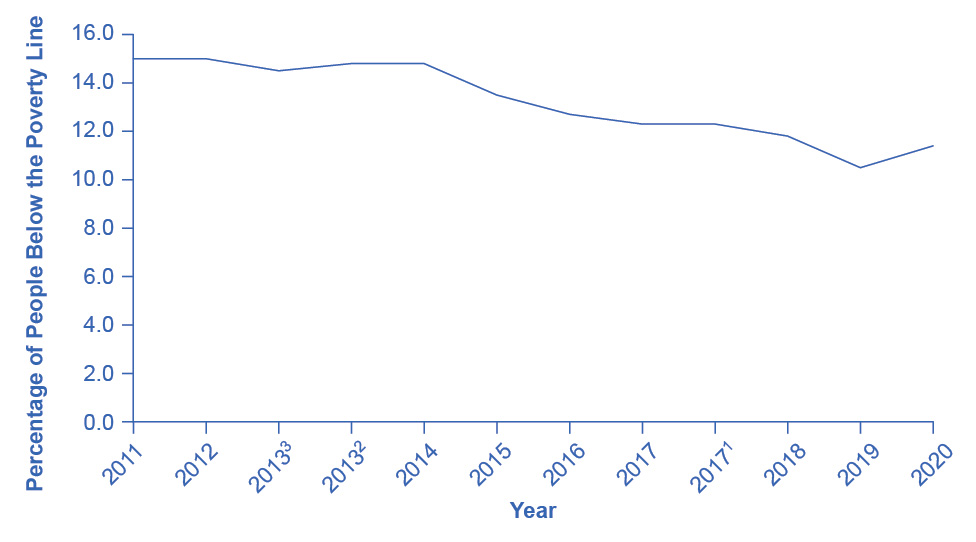
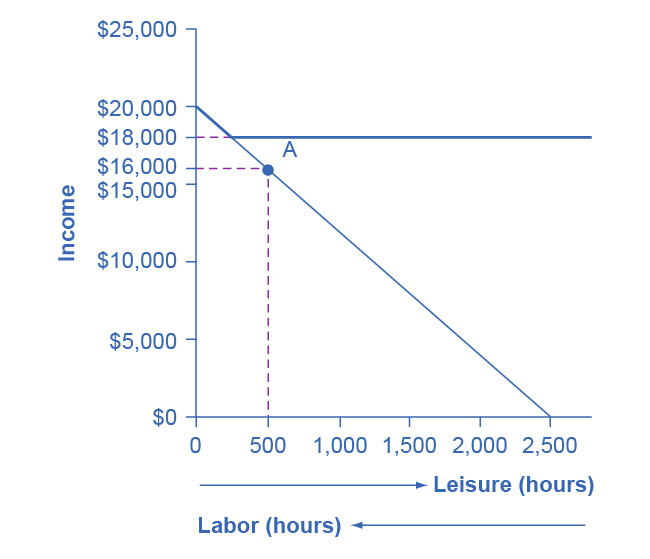
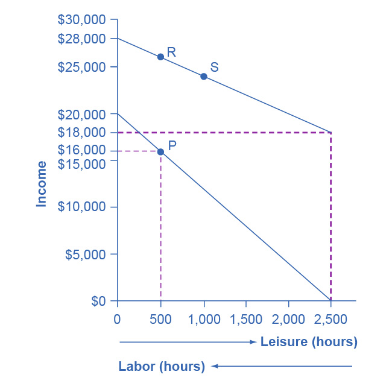
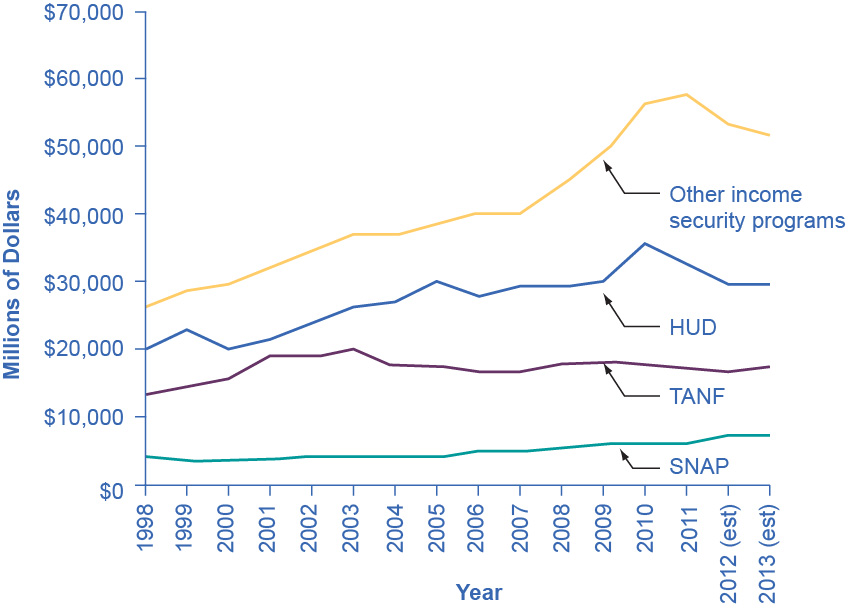
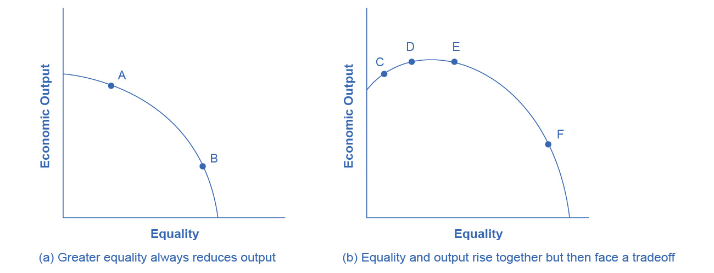

15. Poverty and Inequality
Figure 15.1 Occupying Wall Street On September 17, 2011, Occupy Wall Street began in New York City’s Wall Street financial district. (Credit: modification of “Occupy Wall Street Day 2 2011 Shankbone” by David Shankbone/Flickr Creative Commons, CC BY 2.0)
Chapter Objectives
In this chapter, you will learn about:
- Drawing the Poverty Line
- The Poverty Trap
- The Safety Net
- Income Inequality: Measurement and Causes
- Government Policies to Reduce Income Inequality
Introduction to Poverty and Economic Inequality
Bring It Home
Occupy Wall Street
In September 2011, a group of protesters gathered in Zuccotti Park in New York City to decry what they perceived as increasing social and economic inequality in the United States. Calling their protest “Occupy Wall Street,” they argued that the concentration of wealth among the richest 1% in the United States was both economically unsustainable and inequitable, and needed to be changed. The protest then spread to other major cities, and the Occupy movement was born.
Why were people so upset? How much wealth is concentrated among the top 1% in our society? How did they acquire so much wealth? These are very real, very important questions in the United States now, and this chapter on poverty and economic inequality will help us address the causes behind this sentiment.
The labor markets that determine the pay that workers receive do not take into account how much income a family needs for food, shelter, clothing, and health care. Market forces do not worry about what happens to families when a major local employer goes out of business. Market forces do not take time to contemplate whether those who are earning higher incomes should pay an even higher share of taxes.
However, labor markets do create considerable income inequalities. In 2020, the median American household income was $67,521 (the median is the level where half of all families had more than that level and half had less). For family households, the median was $86,372; for non-family households, it was $40,464. The Census Bureau also reported that in 2020, there were 37.2 million people living in poverty, representing 11.4% of the population. Think about a family of three—perhaps a single mother with two children—attempting to pay for the basics of life on perhaps $17,916 per year. After paying for rent, healthcare, clothing, and transportation, such a family might have $6,000 to spend on food. Spread over 365 days, the food budget for the entire family would be about $17 per day. To put this in perspective, most cities have restaurants where $17 will buy you an appetizer for one.
This chapter explores how the U.S. government defines poverty, the balance between assisting the poor without discouraging work, and how federal antipoverty programs work. It also discusses income inequality—how economists measure inequality, why inequality has changed in recent decades, the range of possible government policies to reduce inequality, and the danger of a tradeoff that too great a reduction in inequality may reduce incentives for producing output.
15.1 Drawing the Poverty Line
Learning Objectives
By the end of this section, you will be able to:
- Explain economic inequality and how the poverty line is determined
- Analyze the U.S. poverty rate over time, noting its prevalence among different groups of citizens
Comparisons of high and low incomes raise two different issues: economic inequality and poverty. Poverty is measured by the number of people who fall below a certain level of income—called the poverty line—that defines the income one needs for a basic standard of living. Income inequality compares the share of the total income (or wealth) in society that different groups receive. For example, one of numerous ways to look at income inequality is to compare the share of income that the top 10% receive to the share of income that the bottom 10% receive.
In the United States, the official definition of the poverty line traces back to a single person: Mollie Orshansky. In 1963, Orshansky, who was working for the Social Security Administration, published an article called “Children of the Poor” in a highly useful and dry-as-dust publication called the Social Security Bulletin. Orshansky’s idea was to define a poverty line based on the cost of a healthy diet.
Her previous job had been at the U.S. Department of Agriculture, where she had worked in an agency called the Bureau of Home Economics and Human Nutrition. One task of this bureau had been to calculate how much it would cost to feed a nutritionally adequate diet to a family. Orshansky found that the average family spent one-third of its income on food. She then proposed that the poverty line be the amount one requires to buy a nutritionally adequate diet, given the size of the family, multiplied by three.
The current U.S. poverty line is essentially the same as the Orshansky poverty line, although the government adjusts the dollar amounts to represent the same buying power over time. The U.S. poverty line in 2021 ranged from $12,880 for a single individual to $26,500 for a household of four people.
Figure 15.2 shows the U.S. poverty rate over time; that is, the percentage of the population below the poverty line in any given year. The poverty rate declined through the 1960s, rose in the early 1980s and early 1990s, but seems to have been slightly lower since the mid-1990s. However, in no year in the last six decades has the poverty rate been less than 10.5% of the U.S. population—that is, at best almost one American in nine is below the poverty line. In recent years, the poverty rate peaked at 15.1% in 2010, before dropping to 10.5% in 2019. Table 15.1 compares poverty rates for different groups in 2011. As you will see when we delve further into these numbers, poverty rates are relatively low for White people, for the elderly, for the well-educated, and for male-headed households. Poverty rates for females, Hispanic people, and African Americans are much higher than for White people. While Hispanic people and African Americans have a higher percentage of individuals living in poverty than others, most people in the United States living below the poverty line are White people.
Link It Up
Visit this website for more information on U.S. poverty.

Figure 15.2 The U.S. Poverty Rate since 1960 The poverty rate fell dramatically during the 1960s, rose in the early 1980s and early 1990s, and, after declining in the 1990s through mid-2000s, rose to 15.1% in 2020, which is close to the 1960 levels. Between 2010 and 2019, the poverty rate declined to 10.5%, before rising to 11.4% in 2020 due to the onset of the COVID-19 pandemic in 2020. (Source: U.S. Census Bureau)
| Group | Poverty Rate |
|---|---|
| Females | 12.6% |
| Males | 10.2% |
| White (Non-Hispanic) | 8.2% |
| Black | 19.5% |
| Hispanic | 17.0% |
| Under age 18 | 16.1% |
| Ages 18–64 | 10.4% |
| Ages 65+ | 9.0% |
The concept of a poverty line raises many tricky questions. In a vast country like the United States, should there be a national poverty line? After all, according to the Federal Register, the median household income for a family of four was $109,113 in New Jersey and $59,701 in Mississippi in 2017, and prices of some basic goods like housing are quite different between states. The poverty line is based on cash income, which means it does not account for government programs that provide non-cash assistance such as Medicaid (health care for low-income individuals and families) and food aid. Also, low-income families can qualify for federal housing assistance. (We will discuss these and other government aid programs in detail later in this chapter.)
Should the government adjust the poverty line to account for the value of such programs? Many economists and policymakers wonder whether we should rethink the concept of what poverty means in the twenty-first century. The following Clear It Up feature explains the poverty lines set by the World Bank for low-income countries around the world.
Clear It Up
How do economists measure poverty in low-income countries?
The World Bank sets two poverty lines for low-income countries around the world. One poverty line is set at an income of $1.90/day per person. The other is at $3.20/day. By comparison, the U.S. 2015 poverty line of $20,090 annually for a family of three works out to $18.35 per person per day.
Clearly, many people around the world are far poorer than Americans, as Table 15.2 shows. China and India both have more than a billion people; Nigeria is the most populous country in Africa; and Egypt is the most populous country in the Middle East. In all four of those countries, in the mid-2000s, a substantial share of the population subsisted on less than $2/day. About half the world lives on less than $2.50 a day, and 80 percent of the world lives on less than $10 per day. (Of course, the cost of food, clothing, and shelter in those countries can be very different from those costs in the United States, so the $2 and $2.50 figures may mean greater purchasing power than they would in the United States.)
| Country | Year | Percentage of Population with Income Less Than $1.90/Day/Person | Percentage of Population with Income Less Than $3.20/Day/Person |
|---|---|---|---|
| Brazil | 2019 | 4.6% | 9.1% |
| China | 2017 | 0.5% | 5.4% |
| Egypt | 2017 | 3.8% | 28.9% |
| India | 2011 | 22.5% | 61.7% |
| Mexico | 2018 | 1.7% | 6.5% |
| Nigeria | 2018 | 39.1% | 71.0% |
Any poverty line will be somewhat arbitrary, and it is useful to have a poverty line whose basic definition does not change much over time. If Congress voted every few years to redefine poverty, then it would be difficult to compare rates over time. After all, would a lower poverty rate change the definition, or is it the case that people were actually better off? Government statisticians at the U.S. Census Bureau have ongoing research programs to address questions like these.
15.2 The Poverty Trap
Learning Objectives
By the end of this section, you will be able to:
- Explain the poverty trap, noting how government programs impact it
- Identify potential issues in government programs that seek to reduce poverty
- Calculate a budget constraint line that represents the poverty trap
Can you give people too much help, or the wrong kind of help? When people are provided with food, shelter, healthcare, income, and other necessities, assistance may reduce their incentive to work, particularly if their work is likely to offer low wages and reduce government assistance. Consider a program to fight poverty that works in this reasonable-sounding manner: the government provides assistance to the those who need it, but as the recipients earn income to support themselves, the government reduces the level of assistance it provides. With such a program, every time a person earns $100, they lose $100 in government support. As a result, the person experiences no net gain for working. Economists call this problem the poverty trap.
Consider the situation a single-parent family faces. Figure 15.3 illustrates a single mother (earning $8 an hour) with two children. First, consider the labor-leisure budget constraint that this family faces in a situation without government assistance. On the horizontal axis is hours of leisure (or time spent with family responsibilities) increasing in quantity from left to right. Also on the horizontal axis is the number of hours at paid work, going from zero hours on the right to the maximum of 2,500 hours on the left. On the vertical axis is the amount of income per year rising from low to higher amounts of income. The budget constraint line shows that at zero hours of leisure and 2,500 hours of work, the maximum amount of income is $20,000 ($8 × 2,500 hours). At the other extreme of the budget constraint line, an individual would work zero hours, earn zero income, but enjoy 2,500 hours of leisure. At point A on the budget constraint line, by working 40 hours a week, 50 weeks a year, the utility-maximizing choice is to work a total of 2,000 hours per year and earn $16,000.
Now suppose that a government antipoverty program guarantees every family with a single mother and two children $18,000 in income. This is represented on the graph by a horizontal line at $18,000. With this program, each time the mother earns $1,000, the government will deduct $1,000 of its support. Table 15.3 shows what will happen at each combination of work and government support.

Figure 15.3 The Poverty Trap in Action The original choice is 500 hours of leisure, 2,000 hours of work at point A, and income of $16,000. With a guaranteed income of $18,000, this family would receive $18,000 whether it provides zero hours of work or 2,000 hours of work. Only if the family provides, say, 2,300 hours of work does its income rise above the guaranteed level of $18,000—and even then, the marginal gain to income from working many hours is small.
| Amount Worked (hours) | Total Earnings | Government Support | Total Income |
|---|---|---|---|
| 0 | 0 | $18,000 | $18,000 |
| 500 | $4,000 | $14,000 | $18,000 |
| 1,000 | $8,000 | $10,000 | $18,000 |
| 1,500 | $12,000 | $6,000 | $18,000 |
| 2,000 | $16,000 | $2,000 | $18,000 |
| 2,500 | $20,000 | 0 | $20,000 |
The new budget line, with the antipoverty program in place, is the horizontal and heavy line that is flat at $18,000. If the mother does not work at all, she receives $18,000, all from the government. If she works full time, giving up 40 hours per week with her children, she still ends up with $18,000 at the end of the year. Only if she works 2,300 hours in the year—which is an average of 44 hours per week for 50 weeks a year—does household income rise to $18,400. Even in this case, all of her year’s work means that household income rises by only $400 over the income she would receive if she did not work at all. She would need to work 50 hours a week to reach $20,800.
The poverty trap is even stronger than this simplified example shows, because a working mother will have extra expenses like clothing, transportation, and child care that a nonworking mother will not face, making the economic gains from working even smaller. Moreover, those who do not work fail to build up job experience and contacts, which makes working in the future even less likely.
To reduce the poverty trap the government could design an antipoverty program so that, instead of reducing government payments by $1 for every $1 earned, the government would reduce payments by some smaller amount instead. Imposing requirements for work as a condition of receiving benefits and setting a time limit on benefits can also reduce the harshness of the poverty trap.
Figure 15.4 illustrates a government program that guarantees $18,000 in income, even for those who do not work at all, but then reduces this amount by 50 cents for each $1 earned. The new, higher budget line in Figure 15.4 shows that, with this program, additional hours of work will bring some economic gain. Because of the reduction in government income when an individual works, an individual earning $8.00 will really net only $4.00 per hour. The vertical intercept of this higher budget constraint line is at $28,000 ($18,000 + 2,500 hours × $4.00 = $28,000). The horizontal intercept is at the point on the graph where $18,000 and 2500 hours of leisure is set. Table 15.4 shows the total income differences with various choices of labor and leisure.
However, this type of program raises other issues. First, even if it does not eliminate the incentive to work by reducing government payments by $1 for every $1 earned, enacting such a program may still reduce the incentive to work. At least some people who would be working 2,000 hours each year without this program might decide to work fewer hours but still end up with more income—that is, their choice on the new budget line would be like S, above and to the right of the original choice P. Of course, others may choose a point like R, which involves the same amount of work as P, or even a point to the left of R that involves more work.
The second major issue is that when the government phases out its support payments more slowly, the antipoverty program costs more money. Still, it may be preferable in the long run to spend more money on a program that retains a greater incentive to work, rather than spending less money on a program that nearly eliminates any gains from working.

Figure 15.4 Loosening the Poverty Trap: Reducing Government Assistance by 50 Cents for Every $1 Earned On the original labor-leisure opportunity set, the lower, downward-sloping budget set, the preferred choice P is 500 hours of leisure and $16,000 of income. Then, the government created an antipoverty program that guarantees $18,000 in income even to those who work zero hours, shown by the hoizontal dashed line. In addition, every $1 earned means phasing out 50 cents of benefits at $18,000. This program leads to the higher budget set, which the diagram shows. The hope is that this program will provide incentives to work the same or more hours, despite receiving income assistance. However, it is possible that the recipients will choose a point on the new budget set like S, with less work, more leisure, and greater income, or a point like R, with the same work and greater income.
| Amount Worked (hours) | Total Earnings | Government Support | Total Income |
|---|---|---|---|
| 0 | 0 | $18,000 | $18,000 |
| 500 | $4,000 | $16,000 | $20,000 |
| 1,000 | $8,000 | $14,000 | $22,000 |
| 1,500 | $12,000 | $12,000 | $24,000 |
| 2,000 | $16,000 | $10,000 | $26,000 |
| 2,500 | $20,000 | $8,000 | $28,000 |
The next module will consider a variety of government support programs focused specifically on people experiencing poverty, including welfare, SNAP (Supplemental Nutrition Assistance Program), Medicaid, and the earned income tax credit (EITC). Although these programs vary from state to state, it is generally a true statement that in many states from the 1960s into the 1980s, if poor people worked, their level of income barely rose—or did not rise at all—after factoring in the reduction in government support payments. The following Work It Out feature shows how this happens.
15.3 The Safety Net
Learning Objectives
By the end of this section, you will be able to:
- Identify the antipoverty government programs that comprise the safety net
- Explain the safety net programs' primary goals and how these programs have changed over time
- Discuss the complexities of these safety net programs and why they can be controversial
The U.S. government has implemented a number of programs to assist those below the poverty line and those who have incomes just above the poverty line. Such programs are called the safety net, to recognize that they offer some protection for those who find themselves without jobs or income.
Temporary Assistance for Needy Families
From the Great Depression until 1996, the United States’ most visible antipoverty program was Aid to Families with Dependent Children (AFDC), which provided cash payments to mothers with children who were below the poverty line. Many just called this program “welfare.” In 1996, Congress passed and President Bill Clinton signed into law the Personal Responsibility and Work Opportunity Reconciliation Act, more commonly called the “welfare reform act.” The new law replaced AFDC with Temporary Assistance for Needy Families (TANF).
Link It Up
Visit this website to watch a video of President Bill Clinton’s Welfare Reform speech.
TANF brought several dramatic changes in how welfare operated. Under the old AFDC program, states set the level of welfare benefits that they would pay to people experiencing poverty, and the federal government guaranteed it would chip in some of the money as well. The federal government’s welfare spending would rise or fall depending on the number of people in need, and on how each state set its own welfare contribution.
Under TANF, however, the federal government gives a fixed amount of money to each state. The state can then use the money for almost any program with an antipoverty component: for example, the state might use the money to give funds to families with low income, or to reduce teenage pregnancy, or even to raise the high school graduation rate. However, the federal government imposed two key requirements. First, if states are to keep receiving the TANF grants, they must impose work requirements so that most of those receiving TANF benefits are working (or attending school). Second, no one can receive TANF benefits with federal money for more than a total of five years over their lifetime. The old AFDC program had no such work requirements or time limits.
TANF attempts to avoid the poverty trap by requiring that welfare recipients work and by limiting the length of time they can receive benefits. In its first few years, the program was quite successful. The number of families receiving payments in 1995, the last year of AFDC, was 4.8 million. November 2020, according to the Congressional Research Service, the number of families receiving payments under TANF was 1.0 million—a decline of nearly 80%.
TANF benefits to poor families vary considerably across states. For example, again according to the Congressional Research Service, in July 2020 the highest monthly payment in New Hampshire to a single mother with one child was $862, while in Mississippi the highest monthly payment to that family was $146. In part, these payments reflect differences in states’ cost of living. As reported by the Department of Health and Human Services, in 1995 total spending on TANF was approximately $19 billion. Spending increased yearly through 2001, then it was roughly flat at approximately $26 billion until 2005, then it increased again through 2010, where it peaked at nearly $35 billion. It then decreased again to around $30 billion in 2020. When you take into account the effects of inflation, the decline is even greater. Moreover, there seemed little evidence that families were suffering a reduced standard of living as a result of TANF—although, on the other side, there was not much evidence that families had greatly improved their total levels of income, either.
The Earned Income Tax Credit (EITC)
The earned income tax credit (EITC), first passed in 1975, is a method of assisting the working poor through the tax system. The EITC is one of the largest assistance program for low-income groups, and as of December 2021, about 25 million eligible workers and families received about $60 billion in EITC. For the 2021 tax year, the earned income credit ranges from $1,502 to $6,728 depending on tax-filing status, income, and number of children. The average amount of EITC received nationwide was about $2,411. In 2021, for example, a single parent with two children would have received a tax credit of $5,980 up to a modest income level. The amount of the tax break increases with the amount of income earned, up to a point. The earned income tax credit has often been popular with both economists and the general public because of the way it effectively increases the payment received for work.
What about the danger of the poverty trap that every additional $1 earned will reduce government support payments by close to $1? To minimize this problem, the earned income tax credit is phased out slowly. For example, according to the Tax Policy Center, for a single-parent family with two children in 2013, the credit is not reduced at all (but neither is it increased) as earnings rise from $13,430 to $17,530. Then, for every $1 earned above $17,530, the amount received from the credit is reduced by 21.06 cents, until the credit phases out completely at an income level of $46,227.
Figure 15.5 illustrates that the earned income tax credits, child tax credits, and the TANF program all cost the federal government money—either in direct outlays or in loss of tax revenues. CTC stands for the government tax cuts for the child tax credit.

Figure 15.5 Real Federal Spending on CTC, EITC, and TANF, 1975–2016 EITC increased from under $10 billion in the late 1980s to almost $42 billion in 2000 and to over $61 billion in 2016, far exceeding estimated 2016 outlays in the CTC (Child Tax Credits) and TANF of over $25 billion and $18 billion, respectively. (Source: Office of Management and Budget)
In recent years, the EITC has become a hugely expensive government program for providing income assistance to people below or near the poverty line, costing about $60 billion in 2021. In that year, the EITC provided benefits to about 25 million families and individuals and, on average, is worth about $2,411 per family (with children), according to the Tax Policy Center. One reason that the TANF law worked as well as it did is that the government greatly expanded EITC in the late 1980s and again in the early 1990s, which increased the returns to work for low-income Americans.
Supplemental Nutrition Assistance Program (SNAP)
Often called “food stamps,” Supplemental Nutrition Assistance Program (SNAP) is a federally funded program, started in 1964, in which each month people receive a card like a debit card that they can use to buy food. The amount of food aid for which a household is eligible varies by income, number of children, and other factors but, in general, households are expected to spend about 30% of their own net income on food, and if 30% of their net income is not enough to purchase a nutritionally adequate diet, then those households are eligible for SNAP.
SNAP can contribute to the poverty trap. For every $100 earned, the government assumes that a family can spend $30 more for food, and thus reduces its eligibility for food aid by $30. This decreased benefit is not a complete disincentive to work—but combined with how other programs reduce benefits as income increases, it adds to the problem. SNAP, however, does try to address the poverty trap with its own set of work requirements and time limits.
Why give debit cards and not just cash? Part of the political support for SNAP comes from a belief that since recipients must spend the the cards on food, they cannot “waste” them on other forms of consumption. From an economic point of view, however, the belief that cards must increase spending on food seems wrong-headed. After all, say that a family is spending $2,500 per year on food, and then it starts receiving $1,000 per year in SNAP aid. The family might react by spending $3,500 per year on food (income plus aid), or it might react by continuing to spend $2,500 per year on food, but use the $1,000 in food aid to free up $1,000 that it can now spend on other goods. Thus, it is reasonable to think of SNAP cards as an alternative method, along with TANF and the earned income tax credit, of transferring income to those working but still experiencing poverty.
Anyone eligible for TANF is also eligible for SNAP, although states can expand eligibility for food aid if they wish to do so. In some states, where TANF welfare spending is relatively low, a poor family may receive more in support from SNAP than from TANF. In 2021, about 41.5 million people received food aid with total benefits of just over $108 billion, which is an average monthly benefit of about $287 per person per month. SNAP participation increased by 70% between 2007 and 2011, from 26.6 million participants to 45 million. According to the Congressional Budget Office, the 2008-2009 Great Recession and rising food prices caused this dramatic rise in participation. Likewise, between 2019 and 2021, the number of participants in SNAP increased by 5.8 million, the amount per person increased by 67%, and total benefits nearly doubled as a consequence of the sharp recession due to the onset of the COVID-19 pandemic in early 2020.
The federal government deploys a range of income security programs that it funds through departments such as Health and Human Services, Agriculture, and Housing and Urban Development (HUD) (see Figure 15.6). According to the Office of Management and Budget, collectively, these three departments provided an estimated $62 billion of aid through programs such as supplemental feeding programs for women and children, subsidized housing, and energy assistance. The federal government also transfers funds to individual states through special grant programs.

Figure 15.6 Expenditure Comparison of TANF, SNAP, HUD, and Other Income Security Programs, 1988–2013 (est.) Total expenditures on income security continued to rise between 1988 and 2010, while payments for TANF have increased from $13 billion in 1998 to an estimated $17.3 billion in 2013. SNAP has seen relatively small increments. These two programs comprise a relatively small portion of the estimated $106 billion dedicated to income security in 2013. Note that other programs and housing programs increased dramatically during the 2008 and 2010 time periods. (Source: Table 12.3 Section 600 Income Security, https://www.whitehouse.gov/sites/default/files/omb/budget/fy2013/assets/hist.pdf)
The safety net includes a number of other programs: government-subsidized school lunches and breakfasts for children from low-income families; the Special Supplemental Food Program for Women, Infants and Children (WIC), which provides food assistance for pregnant women and newborns; the Low Income Home Energy Assistance Program, which provides help with home heating bills; housing assistance, which helps pay the rent; and Supplemental Security Income, which provides cash support for people with disabilities and elderly people experiencing poverty.
Medicaid
Congress created Medicaid in 1965. This is a joint health insurance program between both the states and the federal government. The federal government helps fund Medicaid, but each state is responsible for administering the program, determining the level of benefits, and determining eligibility. It provides medical insurance for certain people with low incomes, including those below the poverty line, with a focus on families with children, the elderly, and people with disabilities. About one-third of Medicaid spending is for low-income mothers with children. While an increasing share of the program funding in recent years has gone to pay for nursing home costs for older people who cannot afford to pay for housing. The program ensures that participants receive a basic level of benefits, but because each state sets eligibility requirements and provides varying levels of service, the program differs from state to state.
In the past, a common problem has been that many low-paying jobs pay enough to a breadwinner so that a family could lose its eligibility for Medicaid, yet the job does not offer health insurance benefits. A parent considering such a job might choose not to work rather than lose health insurance for their children. In this way, health insurance can become a part of the poverty trap. Many states recognized this problem in the 1980s and 1990s and expanded their Medicaid coverage to include people earning up to 135% or even 185% of the poverty line. Some states also guaranteed that children would not lose coverage if their parents worked.
These expanded guarantees cost the government money, of course, but they also helped to encourage those on welfare to enter the labor force. As of 2014, approximately 69.7 million people participated in Medicaid. Of those enrolled, almost half are children. Healthcare expenditures, however, are highest for the elderly population, which comprises approximately 25% of participants. As Figure 15.7 (a) indicates, the largest number of households that enroll in Medicaid are those with children. Lower-income adults are the next largest group enrolled in Medicaid at 28%. People who are blind or have a disability account for 16% of those enrolled, and seniors are 9% of those enrolled. Figure 15.7 (b) shows how much actual Medicaid dollars the government spends for each group. Out of total Medicaid spending, the government spends more on seniors (20%) and people who are blind or have a disability (44%). Thus, 64% of all Medicaid spending goes to seniors, those who are blind, and people with disabilities. Children receive 21% of all Medicaid spending, followed by adults at 15%.

Figure 15.7 Medicaid Enrollment and Spending Part (a) shows the Medicaid enrollment by different populations, with children comprising the largest percentage at 47%, followed by adults at 28%, and those who are blind or have a disability at 16%. Part (b) shows that Medicaid spending is principally for those who are blind or have a disability, followed by the elderly. Although children are the largest population that Medicaid covers, expenditures on children are only at 19%.
15.4 Income Inequality: Measurement and Causes
Learning Objectives
By the end of this section, you will be able to:
- Explain the distribution of income, and analyze the sources of income inequality in a market economy
- Measure income distribution in quintiles
- Calculate and graph a Lorenz curve
- Show income inequality through demand and supply diagrams
Poverty levels can be subjective based on the overall income levels of a country. Typically a government measures poverty based on a percentage of the median income. Income inequality, however, has to do with the distribution of that income, in terms of which group receives the most or the least income. Income inequality involves comparing those with high incomes, middle incomes, and low incomes—not just looking at those below or near the poverty line. In turn, measuring income inequality means dividing the population into various groups and then comparing the groups, a task that we can be carry out in several ways, as the next Clear It Up feature shows.
Clear It Up
How do you separate poverty and income inequality?
Poverty can change even when inequality does not move at all. Imagine a situation in which income for everyone in the population declines by 10%. Poverty would rise, since a greater share of the population would now fall below the poverty line. However, inequality would be the same, because everyone suffered the same proportional loss. Conversely, a general rise in income levels over time would keep inequality the same, but reduce poverty.
It is also possible for income inequality to change without affecting the poverty rate. Imagine a situation in which a large number of people who already have high incomes increase their incomes by even more. Inequality would rise as a result—but the number of people below the poverty line would remain unchanged.
Why did inequality of household income increase in the United States in recent decades? A trend toward greater income inequality has occurred in many countries around the world, although the effect has been more powerful in the U.S. economy. Economists have focused their explanations for the increasing inequality on two factors that changed more or less continually from the 1970s into the 2000s. One set of explanations focuses on the changing shape of American households. The other focuses on greater inequality of wages, what some economists call “winner take all” labor markets. We will begin with how we measure inequality, and then consider the explanations for growing inequality in the United States.
Measuring Income Distribution by Quintiles
One common way of measuring income inequality is to rank all households by income, from lowest to highest, and then to divide all households into five groups with equal numbers of people, known as quintiles. This calculation allows for measuring the distribution of income among the five groups compared to the total. The first quintile is the lowest fifth or 20%, the second quintile is the next lowest, and so on. We can measure income inequality by comparing what share of the total income each quintile earns.
U.S. income distribution by quintile appears in Table 15.5. In 2020, for example, the bottom quintile of the income distribution received 3.2% of income; the second quintile received 8.1%; the third quintile, 14.0%; the fourth quintile, 22.6%; and the top quintile, 52.2%. The final column of Table 15.5 shows what share of income went to households in the top 5% of the income distribution: 23.0% in 2020. Over time, from the late 1960s to the early 1980s, the top fifth of the income distribution typically received between about 43% to 44% of all income. The share of income that the top fifth received then begins to rise. Census Bureau researchers trace, much of this increase in the share of income going to the top fifth to an increase in the share of income going to the top 5%. The quintile measure shows how income inequality has increased in recent decades.
| Year | Lowest Quintile | Second Quintile | Third Quintile | Fourth Quintile | Highest Quintile | Top 5% |
|---|---|---|---|---|---|---|
| 1967 | 4.0 | 10.8 | 17.3 | 24.2 | 43.6 | 17.2 |
| 1970 | 4.1 | 10.8 | 17.4 | 24.5 | 43.3 | 16.6 |
| 1975 | 4.3 | 10.4 | 17.0 | 24.7 | 43.6 | 16.5 |
| 1980 | 4.2 | 10.2 | 16.8 | 24.7 | 44.1 | 16.5 |
| 1985 | 3.9 | 9.8 | 16.2 | 24.4 | 45.6 | 17.6 |
| 1990 | 3.8 | 9.6 | 15.9 | 24.0 | 46.6 | 18.5 |
| 1995 | 3.7 | 9.1 | 15.2 | 23.3 | 48.7 | 21.0 |
| 2000 | 3.6 | 8.9 | 14.8 | 23.0 | 49.8 | 22.1 |
| 2005 | 3.4 | 8.6 | 14.6 | 23.0 | 50.4 | 22.2 |
| 2010 | 3.3 | 8.5 | 14.6 | 23.4 | 50.3 | 21.3 |
| 2015 | 3.1 | 8.2 | 14.3 | 23.2 | 51.1 | 22.1 |
| 2020 | 3.0 | 8.1 | 14.0 | 22.6 | 52.2 | 23.0 |
It can also be useful to divide the income distribution in ways other than quintiles; for example, into tenths or even into percentiles (that is, hundredths). A more detailed breakdown can provide additional insights. For example, the last column of Table 15.5 shows the income received by the top 5% of the income distribution. Between 1980 and 2020, the share of income going to the top 5% increased by 6.5 percentage points (from 16.5% in 1980 to 23.0% in 2020). From 1980 to 2020 the share of income going to the top quintile increased by 8.1 percentage points (from 44.1% in 1980 to 52.2% in 2013). Thus, the top 20% of householders (the fifth quintile) received over half (51%) of all the income in the United States in 2020.
Lorenz Curve
We can present the data on income inequality in various ways. For example, you could draw a bar graph that showed the share of income going to each fifth of the income distribution. Figure 15.8 presents an alternative way of showing inequality data in a Lorenz curve. This curve shows the cumulative share of population on the horizontal axis and the cumulative percentage of total income received on the vertical axis.

Figure 15.8 The Lorenz Curve A Lorenz curve graphs the cumulative shares of income received by everyone up to a certain quintile. The income distribution in 1980 was closer to the perfect equality line than the income distribution in 2020—that is, the U.S. income distribution became more unequal over time.
Every Lorenz curve diagram begins with a line sloping up at a 45-degree angle. We show it as a dashed line in Figure 15.8. The points along this line show what perfect equality of the income distribution looks like. It would mean, for example, that the bottom 20% of the income distribution receives 20% of the total income, the bottom 40% gets 40% of total income, and so on. The other lines reflect actual U.S. data on inequality for 1980 and 2020.
The trick in graphing a Lorenz curve is that you must change the shares of income for each specific quintile, which we show in the first and third columns of numbers in Table 15.6, into cumulative income, which we show in the second and fourth columns of numbers. For example, the bottom 40% of the cumulative income distribution will be the sum of the first and second quintiles; the bottom 60% of the cumulative income distribution will be the sum of the first, second, and third quintiles, and so on. The final entry in the cumulative income column needs to be 100%, because by definition, 100% of the population receives 100% of the income.
| Income Category | Share of Income in 1980 (%) | Cumulative Share of Income in 1980 (%) | Share of Income in 2020 (%) | Cumulative Share of Income in 2020 (%) |
|---|---|---|---|---|
| First quintile | 4.2 | 4.2 | 3.0 | 3.0 |
| Second quintile | 10.2 | 14.4 | 8.1 | 11.1 |
| Third quintile | 16.8 | 31.2 | 14.0 | 25.1 |
| Fourth quintile | 24.7 | 55.9 | 22.6 | 47.7 |
| Fifth quintile | 44.1 | 100.0 | 52.2 | 100.0 |
In a Lorenz curve diagram, a more unequal distribution of income will loop farther down and away from the 45-degree line, while a more equal distribution of income will move the line closer to the 45-degree line. Figure 15.8 illustrates the greater inequality of the U.S. income distribution between 1980 and 2020 because the Lorenz curve for 2020 is farther from the 45-degree line than the Lorenz curve for 1980. The Lorenz curve is a useful way of presenting the quintile data that provides an image of all the quintile data at once. The next Clear It Up feature shows how income inequality differs in various countries compared to the United States.
Clear It Up
How does economic inequality vary around the world?
The U.S. economy has a relatively high degree of income inequality by global standards. As Table 15.7 shows, based on a variety of national surveys for a selection of years in the second decade of this century, the U.S. economy has greater inequality than Germany (along with most Western European countries). The region of the world with the highest level of income inequality is Latin America, illustrated in the numbers for Brazil and Mexico. The level of inequality in the United States is higher than in some of the low-income countries of the world, like India and Nigeria, as well as in some middle-income countries, like China and Russia.
| Country | Survey Year | First Quintile | Second Quintile | Third Quintile | Fourth Quintile | Fifth Quintile |
|---|---|---|---|---|---|---|
| United States | 2020 | 3.0% | 8.1% | 14.0% | 22.6% | 52.2% |
| Germany | 2016 | 7.6% | 12.8% | 17.1% | 22.8% | 39.6% |
| Brazil | 2019 | 3.1% | 7.4% | 12.3% | 19.4% | 57.8% |
| Mexico | 2018 | 5.4% | 9.5% | 13.5% | 20.0% | 51.7% |
| China | 2016 | 6.5% | 10.7% | 15.3% | 22.2% | 45.3% |
| India | 2011 | 8.1% | 11.7% | 15.2% | 20.5% | 44.4% |
| Russia | 2018 | 7.1% | 11.2% | 15.2% | 21.4% | 45.1% |
| Nigeria | 2018 | 7.1% | 11.6% | 16.2% | 22.7% | 42.4% |
Link It Up
Visit this website to watch a video of wealth inequality across the world.
Causes of Growing Inequality: The Changing Composition of American Households
In 1970, 41% of married women were in the labor force, but by 2019, according to the Bureau of Labor Statistics, 58.6% of married women were in the labor force. One result of this trend is that more households have two earners. Moreover, it has become more common for one high earner to marry another high earner. A few decades ago, the common pattern featured a man with relatively high earnings, such as an executive or a doctor, marrying a woman who did not earn as much, like a secretary or a nurse. Often, the woman would leave paid employment, at least for a few years, to raise a family. However, now doctors are marrying doctors and executives are marrying executives, and mothers with high-powered careers are often returning to work while their children are quite young. This pattern of households with two high earners tends to increase the proportion of high-earning households.
According to data in the National Journal, even as two-earner couples have increased, so have single-parent households. Of all U.S. families, in 2021, about 23% were headed by single mothers. The poverty rate among single-parent households tends to be relatively high.
These changes in family structure, including the growth of single-parent families who tend to be at the lower end of the income distribution, and the growth of two-career high-earner couples near the top end of the income distribution, account for roughly half of the rise in income inequality across households in recent decades.
Link It Up
Visit this website to watch a video that illustrates the distribution of wealth in the United States.
Causes of Growing Inequality: A Shift in the Distribution of Wages
Another factor behind the rise in U.S. income inequality is that earnings have become less equal since the late 1970s. In particular, the earnings of high-skilled labor relative to low-skilled labor have increased. Winner-take-all labor markets result from changes in technology, which have increased global demand for “stars,”—whether the best CEO, doctor, basketball player, or actor. This global demand pushes salaries far above productivity differences associated with educational differences. One way to measure this change is to take workers' earnings with at least a four-year college bachelor’s degree (including those who went on and completed an advanced degree) and divide them by workers' earnings with only a high school degree. The result is that those in the 25–34 age bracket with college degrees earned about 1.85 times as much as high school graduates in 2020, up from 1.59 times in 1995, according to U.S. Census data. Winner-take-all labor market theory argues that the salary gap between the median and the top 1 percent is not due to educational differences.
Economists use the demand and supply model to reason through the most likely causes of this shift. According to the National Center for Education Statistics, in recent decades, the supply of U.S. workers with college degrees has increased substantially. For example, 840,000 four-year bachelor’s degrees were conferred on Americans in 1970. In 2018–2019, 2.0 million such degrees were conferred—an increase of over 138%. In Figure 15.9, this shift in supply to the right, from S0 to S1, by itself should result in a lower equilibrium wage for high-skilled labor. Thus, we can explain the increase in the price of high-skilled labor by a greater demand, like the movement from D0 to D1. Evidently, combining both the increase in supply and in demand has resulted in a shift from E0 to E1, and a resulting higher wage.

Figure 15.9 Why Would Wages Rise for High-Skilled Labor? The proportion of workers attending college has increased in recent decades, so the supply curve for high-skilled labor has shifted to the right, from S0 to S1. If the demand for high-skilled labor had remained at D0, then this shift in supply would have led to lower wages for high-skilled labor. However, the wages for high-skilled labor, especially if there is a large global demand, have increased even with the shift in supply to the right. The explanation must lie in a shift to the right in demand for high-skilled labor, from D0 to D1. The figure shows how a combination of the shift in supply, from S0 to S1, and the shift in demand, from D0 to D1, led to both an increase in the quantity of high-skilled labor hired and also to a rise in the wage for such labor, from W0 to W1.
What factors would cause the demand for high-skilled labor to rise? The most plausible explanation is that while the explosion in new information and communications technologies over the last several decades has helped many workers to become more productive, the benefits have been especially great for high-skilled workers like top business managers, consultants, and design professionals. The new technologies have also helped to encourage globalization, the remarkable increase in international trade over the last few decades, by making it more possible to learn about and coordinate economic interactions all around the world. In turn, the rising impact of foreign trade in the U.S. economy has opened up greater opportunities for high-skilled workers to sell their services around the world, and lower-skilled workers have to compete with a larger supply of similarly skilled workers around the globe.
We can view the market for high-skilled labor as a race between forces of supply and demand. Additional education and on-the-job training will tend to increase the high-skilled labor supply and to hold down its relative wage. Conversely, new technology and other economic trends like globalization tend to increase the demand for high-skilled labor and push up its relative wage. We can view the greater inequality of wages as a sign that demand for skilled labor is increasing faster than supply. Alternatively, if the supply of lower skilled workers exceeds the demand, then average wages in the lower quintiles of the income distribution will decrease. The combination of forces in the high-skilled and low-skilled labor markets leads to increased income disparity.
15.5 Government Policies to Reduce Income Inequality
Learning Objectives
By the end of this section, you will be able to:
- Explain the arguments for and against government intervention in a market economy
- Identify beneficial ways to reduce the economic inequality in a society
- Show the tradeoff between incentives and income equality
No society should expect or desire complete equality of income at a given point in time, for a number of reasons. First, most workers receive relatively low earnings in their first few jobs, higher earnings as they reach middle age, and then lower earnings after retirement. Thus, a society with people of varying ages will have a certain amount of income inequality. Second, people’s preferences and desires differ. Some are willing to work long hours to have income for large houses, fast cars and computers, luxury vacations, and the ability to support children and grandchildren.
These factors all imply that a snapshot of inequality in a given year does not provide an accurate picture of how people’s incomes rise and fall over time. Even if we expect some degree of economic inequality at any point in time, how much inequality should there be? There is also the difference between income and wealth, as the following Clear It Up feature explains.
Clear It Up
How do you measure wealth versus income inequality?
Income is a flow of money received, often measured on a monthly or an annual basis. Wealth is the sum of the value of all assets, including money in bank accounts, financial investments, a pension fund, and the value of a home. In calculating wealth, one must subtract all debts, such as debt owed on a home mortgage and on credit cards. A retired person, for example, may have relatively little income in a given year, other than a pension or Social Security. However, if that person has saved and invested over time, the person’s accumulated wealth can be quite substantial.
In the United States, the wealth distribution is more unequal than the income distribution, because differences in income can accumulate over time to make even larger differences in wealth. However, we can measure the degree of inequality in the wealth distribution with the same tools we use to measure the inequality in the income distribution, like quintile measurements. Once every three years the Federal Reserve Bank publishes the Survey of Consumer Finance which reports a collection of data on wealth.
Even if they cannot answer the question of how much inequality is too much, economists can still play an important role in spelling out policy options and tradeoffs. If a society decides to reduce the level of economic inequality, it has three main sets of tools: redistribution from those with high incomes to those with low incomes; trying to assure that a ladder of opportunity is widely available; and a tax on inheritance.
Redistribution
Redistribution means taking income from those with higher incomes and providing income to those with lower incomes. Earlier in this chapter, we considered some of the key government policies that provide support for people experiencing poverty: the welfare program TANF, the earned income tax credit, SNAP, and Medicaid. If a reduction in inequality is desired, these programs could receive additional funding.
The federal income tax, which is a progressive tax system designed in such a way that the rich pay a higher percent in income taxes than the poor, funds the programs. Data from household income tax returns in 2018 shows that the top 1% of households had an average income of $1,679,000 per year in pre-tax income and paid an average federal tax rate of 25.4%. The effective income tax, which is total taxes paid divided by total income (all sources of income such as wages, profits, interest, rental income, and government transfers such as veterans’ benefits), was much lower. The effective tax paid by that top 1% of householders paid was 20.4%, while the bottom two quintiles actually paid negative effective income taxes, because of provisions like the earned income tax credit. News stories occasionally report on a high-income person who has managed to pay very little in taxes, but while such individual cases exist, according to the Congressional Budget Office, the typical pattern is that people with higher incomes pay a higher average share of their income in federal income taxes.
Of course, the fact that some degree of redistribution occurs now through the federal income tax and government antipoverty programs does not settle the questions of how much redistribution is appropriate, and whether more redistribution should occur.
The Ladder of Opportunity
Economic inequality is perhaps most troubling when it is not the result of effort or talent, but instead is determined by the circumstances under which a child grows up. One child attends a well-run grade school and high school and heads on to college, while parents help out by supporting education and other interests, paying for college, a first car, and a first house, and offering work connections that lead to internships and jobs. Another child attends a poorly run grade school, barely makes it through a low-quality high school, does not go to college, and lacks family and peer support. These two children may be similar in their underlying talents and in the effort they put forth, but their economic outcomes are likely to be quite different.
Public policy can attempt to build a ladder of opportunities so that, even though all children will never come from identical families and attend identical schools, each child has a reasonable opportunity to attain an economic niche in society based on their interests, desires, talents, and efforts. Table 15.8 shows some of those initiatives.
| Children | College Level | Adults |
|---|---|---|
| • Improved day care | • Widespread loans and grants for those in financial need | • Opportunities for retraining and acquiring new skills |
| • Enrichment programs for preschoolers | • Public support for a range of institutions from two-year community colleges to large research universities | • Prohibiting discrimination in job markets and housing on the basis of race, gender, age, and disability |
| • Improved public schools | - | - |
| • After school and community activities | - | - |
| • Internships and apprenticeships | - | - |
Some have called the United States a land of opportunity. Although the general idea of a ladder of opportunity for all citizens continues to exert a powerful attraction, specifics are often quite controversial. Society can experiment with a wide variety of proposals for building a ladder of opportunity, especially for those who otherwise seem likely to start their lives in a disadvantaged position. The government needs to carry out such policy experiments in a spirit of open-mindedness, because some will succeed while others will not show positive results or will cost too much to enact on a widespread basis.
Inheritance Taxes
There is always a debate about inheritance taxes. It goes like this: Why should people who have worked hard all their lives and saved up a substantial nest egg not be able to give their money and possessions to their children and grandchildren? In particular, it would seem un-American if children were unable to inherit a family business or a family home. Alternatively, many Americans are far more comfortable with inequality resulting from high-income people who earned their money by starting innovative new companies than they are with inequality resulting from high-income people who have inherited money from rich parents.
The United States does have an estate tax—that is, a tax imposed on the value of an inheritance—which suggests a willingness to limit how much wealth one can pass on as an inheritance. However, in 2022 the estate tax applied only to those leaving inheritances of more than $12.06 million and thus applies to only a tiny percentage of those with high levels of wealth.
The Tradeoff between Incentives and Income Equality
Government policies to reduce poverty or to encourage economic equality, if carried to extremes, can injure incentives for economic output. The poverty trap, for example, defines a situation where guaranteeing a certain level of income can eliminate or reduce the incentive to work. An extremely high degree of redistribution, with very high taxes on the rich, would be likely to discourage work and entrepreneurship. Thus, it is common to draw the tradeoff between economic output and equality, as Figure 15.10 (a) shows. In this formulation, if society wishes a high level of economic output, like point A, it must also accept a high degree of inequality. Conversely, if society wants a high level of equality, like point B, it must accept a lower level of economic output because of reduced incentives for production.
This view of the tradeoff between economic output and equality may be too pessimistic, and Figure 15.10 (b) presents an alternate vision. Here, the tradeoff between economic output and equality first slopes up, in the vicinity of choice C, suggesting that certain programs might increase both output and economic equality. For example, the policy of providing free public education has an element of redistribution, since the value of the public schooling received by children of low-income families is clearly higher than what low-income families pay in taxes. A well-educated population, however, is also an enormously powerful factor in providing the skilled workers of tomorrow and helping the economy to grow and expand. In this case, equality and economic growth may complement each other.
Moreover, policies to diminish inequality and soften the hardship of poverty may sustain political support for a market economy. After all, if society does not make some effort toward reducing inequality and poverty, the alternative might be that people would rebel against market forces. Citizens might seek economic security by demanding that their legislators pass laws forbidding employers from ever laying off workers or reducing wages, or laws that would impose price floors and price ceilings and shut off international trade. From this viewpoint, policies to reduce inequality may help economic output by building social support for allowing markets to operate.

Figure 15.10 The Tradeoff between Incentives and Economic Equality (a) Society faces a trade-off where any attempt to move toward greater equality, like moving from choice A to B, involves a reduction in economic output. (b) Situations can arise like point C, where it is possible both to increase equality and also to increase economic output, to a choice like D. It may also be possible to increase equality with little impact on economic output, like the movement from choice D to E. However, at some point, too aggressive a push for equality will tend to reduce economic output, as in the shift from E to F.
The tradeoff in Figure 15.10 (b) then flattens out in the area between points D and E, which reflects the pattern that a number of countries that provide similar levels of income to their citizens—the United States, Canada, European Union nations, Japan, and Australia—have different levels of inequality. The pattern suggests that countries in this range could choose a greater or a lesser degree of inequality without much impact on economic output. Only if these countries push for a much higher level of equality, like at point F, will they experience the diminished incentives that lead to lower levels of economic output. In this view, while a danger always exists that an agenda to reduce poverty or inequality can be poorly designed or pushed too far, it is also possible to discover and design policies that improve equality and do not injure incentives for economic output by very much—or even improve such incentives.
Bring It Home
Occupy Wall Street
The Occupy movement took on a life of its own over the last few months of 2011, bringing to light issues that many people faced on the lower end of the income distribution. The contents of this chapter indicate that there is a significant amount of income inequality in the United States. The question is: What should be done about it?
The 2008-2009 Great Recession caused unemployment to rise and incomes to fall. Many people attribute the recession to mismanagement of the financial system by bankers and financial managers—those in the 1% of the income distribution—but those in lower quintiles bore the greater burden of the recession through unemployment. This seemed to present the picture of inequality in a different light: the group that seemed responsible for the recession was not the group that seemed to bear the burden of the decline in output. A burden shared can bring a society closer together. A burden pushed off onto others can polarize it.
On one level, the problem with trying to reduce income inequality comes down to whether you still believe in the American Dream. If you believe that one day you will have your American Dream—a large income, large house, happy family, or whatever else you would like to have in life—then you do not necessarily want to prevent anyone else from living out their dream. You certainly would not want to run the risk that someone would want to take part of your dream away from you. Thus, there is some reluctance to engage in a redistributive policy to reduce inequality.
However, when those for whom the likelihood of living the American Dream is very small are considered, there are sound arguments in favor of trying to create greater balance. As the text indicated, a little more income equality, gained through long-term programs like increased education and job training, can increase overall economic output. Then everyone is made better off, and the 1% will not seem like such a small group any more.